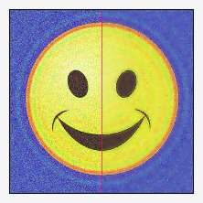
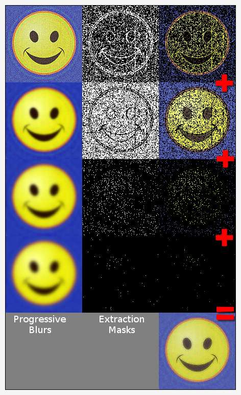

Selective blur aims to preserve edges while reducing noise. Both phenomena exhibit very high rates of change, but noise tends to random, mutually cancelling impulses while edges exhibit a degree of coherency. This command tends to agressively blur noise in locales where the average rate of change is relatively low, impulses notwithstanding as these tend to cancel out, while avoiding regions where pixels clump into distinct populations of color or luminosity that give rise to edge locales of rapid average color and luminosity change.
The command has the following format:
-blur_selective: sigma>=0,_edges>0,_nb_scales>0
-blur_selective has two goals: preserve edges and smooth noise out of regions which, on average, do not change much, such as the blue background of the happy face or the yellow areas of the face. The second goal favors blurring, but this is not conducive to the first: preserving edges.
To resolve this, -blur_selective employs -gradient_norm as an edge detector. -gradient_norm produces a gray scale image where regions of rapid luminance or chromatic change in the subject image translate to light regions in the output, which are otherwise dark. It is sensitive to noise, but even more sensitive to the abutting of dissimilar regions in the original, producing a stronger signal — an edge — than noise pixels in isolation.
The command generates extraction masks from a -quantized version of the gradient norm, one for each scale specified by nb_scales. The masks stemming from the lighter portions of the gradient norm isolate edges in the original, those stemming from dark region isolate portions of constant color and luminance in the subject
the extraction masks it generates reflect this property. The first mask selects regions reflecting rapid changes in luminance in the subject image, such as around edges. The others select regions which exhibit progressively lower rates.
The extraction masks achieve these goals because they form a progression. The very first mask in the series selects regions of rapid change, the last regions of gradual change.
The blur_selective command iterates over the extraction masks, starting with the first mask. At each iteration, the command harnesses the extraction mask to copy a region of the subject image and then blurs the subject image a fraction — in particular, the fraction of sigma over the number of scales, less one. The first extraction mask copies from an unblurred version of the subject image, and since this first mask isolates mainly edges, edges are copied off to a save-set before the the blurring step of the first iteration occurs. The command then blurs the subject image and the iteration repeats.
As the iteration proceeds, the extraction masks select from progressively blurred versions of the subject image. At each stage, noise — and edges — are softened in the subject image, but since earlier stages of the iteration had preserved the edge-like regions of the subject image in save-sets, the deteriation of edges in the subject image are of no concern.
The latter masks serve the second goal. These extract regions to save-sets that exhibited more constant luminance in the original subject image — regions that have been blurred — and denoised — in subsequent iterations. The save-sets produced toward the end of the iteration contain the relatively constant regions in the original subject image, regions that have now been deblurred by one or more blurring steps.
Garry Osgood